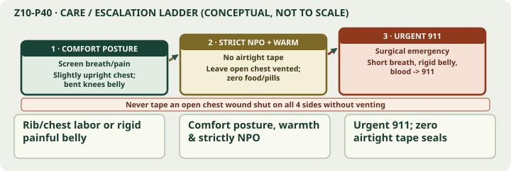

Z10-P40 · Wilderness medicine · New manuscript
Spot chest and acute abdominal emergencies requiring immediate evacuation
Recognize life-threatening chest wall, breathing, and abdominal warning signs that cannot be managed in backcountry settings.
When it applies · Fall onto ribs, chest puncture, sudden severe abdominal pain, rigid belly, or persistent vomiting with fever.
Equipment · Clean dressings, ground insulation, monitoring log, and emergency communication.

Actions
- Call 911 immediately for chest injury causing shortness of breath, coughing blood, uneven chest movement, or an open sucking chest wound (leave an open chest wound uncovered/vented unless trained specifically in vented chest-seal care; never seal tightly with improvised airtight plastic that traps air pressure).[M01, M05, T02]
- Treat severe localized or worsening abdominal pain, a hard board-like abdomen, persistent vomiting, high fever, blood in vomit/stool, or pregnancy abdominal pain/bleeding as urgent surgical/medical emergencies requiring evacuation.[M19, M05, T02]
- Position the patient comfortably (often slightly upright for chest pain or knees gently bent for abdominal pain), insulate from cold ground, and withhold food, water, and painkillers that mask deterioration.[M05, E05, M20]
Failure recognition · Sealing an open chest wound tightly on all four sides with duct tape without venting, or giving heavy pain pills for worsening lower-right abdominal pain and waiting overnight.[M05, M20]
Verify · Confirm breathing effort, abdominal rigidity/pain trend, and NPO status are logged clearly for incoming EMS.[M05, M20]
Stop or change course · Rapidly worsening shortness of breath, bluish lips, rigid abdomen, or shock signs require maximum-priority emergency extraction.[M05, T02]
Evidence and editorial notes
- E05 · NWS · What To Do If You're Caught in a Winter Storm (current web edition)
- Section: Outside and find shelter · Conditions: Cold, wet or windy winter conditions
Support: Block wind, stay dry and keep off cold ground. Keep exposure reduction separate from making a fire.
Limitations: Improvised windbreaks do not provide rated thermal protection or snow-load capacity. · Conflicting evidence: None; aligns with CDC-H.
Editorial note: Separates wind, ground, and moisture heat-loss pathways. · Specialist reviewer: Cold-weather shelter specialist
Primary source · checked 2026-11-24 - M01 · American College of Surgeons · STOP THE BLEED Training Course (current web edition)
- Section: Ensure Your Own Safety; Find Life-Threatening Bleeding; Compress · Conditions: Lay responder encountering severe external hemorrhage
Support: Ensure scene safety first, call 911, expose the wound to locate life-threatening bleeding, and apply firm continuous direct pressure with clean gauze or cloth.
Limitations: Does not replace formal hands-on Stop the Bleed training or EMS trauma care. · Conflicting evidence: None across ACS/ARC guidelines.
Editorial note: Separates life-threatening arterial/venous hemorrhage from minor scrapes. · Specialist reviewer: Wilderness medicine and trauma EMS
Primary source · checked 2026-11-24 - M05 · NIH / MedlinePlus · Shock (current web edition)
- Section: Recognizing Circulatory Shock and Positioning · Conditions: Injured or ill patient with pale cool clammy skin, rapid weak pulse, confusion, or dizziness
Support: Treat suspected shock as a life-threatening emergency: call 911, control external bleeding, keep the person warm and insulated from cold ground, and do not give food or drink.
Limitations: Field responders cannot diagnose internal hemorrhage or administer IV fluids. · Conflicting evidence: None; reinforces keeping suspected shock patients NPO and warm.
Editorial note: Core shock recognition and stabilization boundary in Z10. · Specialist reviewer: Emergency and wilderness medicine
Primary source · checked 2026-11-24 - M19 · NIH / MedlinePlus · Bleeding (current web edition)
- Section: Internal Bleeding, Nosebleed, and Dressing Monitoring · Conditions: External vs suspected internal hemorrhage and severe epistaxis
Support: For routine nosebleed, sit upright leaning slightly forward and pinch the soft part of the nose continuously; escalate urgently for uncontrolled bleeding, coughing/vomiting blood, abdominal rigidity, or dizziness.
Limitations: Tilting the head backward causes blood swallowing and airway irritation. · Conflicting evidence: None; distinguishes minor nosebleed from internal-bleeding emergencies.
Editorial note: Supports bleeding sub-scenarios and recheck cadence. · Specialist reviewer: Emergency medicine and EMS
Primary source · checked 2026-11-24 - M20 · NIH / MedlinePlus · First Aid Overview (current web edition)
- Section: Lay First-Aid Scope, Kit Readiness, and Documentation · Conditions: Pre-trip kit preparation and remote patient monitoring
Support: Maintain an inspected, unexpired first-aid kit matched to your actual training, keep written patient observations (time, responsiveness, breathing, symptoms, interventions) for EMS handoff, and practice skills in certified courses.
Limitations: Carrying advanced medical instruments without clinical training adds risk rather than capability. · Conflicting evidence: None; aligns with ARC and NPS-K.
Editorial note: Anchors kit sizing, SOAP-style lay observation logs, and scope-of-practice cards. · Specialist reviewer: Wilderness EMS and clinical education
Primary source · checked 2026-11-24 - T02 · American Red Cross · First Aid Steps (current web edition)
- Section: First Aid Steps > Call 9-1-1 · Conditions: Lay emergency response to unresponsiveness, abnormal breathing or severe bleeding
Support: Activate EMS and get needed equipment. Follow dispatcher directions and act within training.
Limitations: Remote locations may delay EMS arrival, requiring sustained stabilization after activation. · Conflicting evidence: None; aligns with NPS-E.
Editorial note: Mandates early emergency activation and dispatcher adherence. · Specialist reviewer: EMS and wilderness medicine
Primary source · checked 2026-11-24
Source lineage · NIH MedlinePlus Wounds and Shock; new manuscript · Classification · New manuscript.